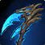

All specs
Every spec in one pack. Displays load only for the spec you are currently playing.

Conquest of Azeroth
Domination, Harvest, Soul
Community draft: generated and validated, but nobody has confirmed this exact version in game yet. Feedback converges it.
What lands on your screen
Rotation, cooldowns, buffs and reminders for all 3 specs. Displays load only for the class and spec you are actually playing, so importing several class packs costs nothing on the ones you are not.
Drawn to scale straight from the import string, at the size and position the pack really uses. In play shows only what stays on screen. Everything adds the buff and alert rows, which are active-only — in play they hold just the auras that are up, and the row re-centres as they come and go.
Import
Take the all-specs pack unless you only ever play the one spec. They are built from the same source and lay out identically.
/wa.Re-importing an updated version replaces the old one. If the pack looks unchanged after an update, delete the old group first — WeakAuras keeps what it already has when nothing tells it the pack moved.
Every spec in one pack. Displays load only for the spec you are currently playing.
Domination only — smaller import if you never play the others.
Harvest only.
Soul only.
Bands top to bottom, drawn from the actual import. Things you react to within a global sit nearest your character; set-and-forget sits furthest away. Buff rows are active-only — empty until something is up, so the pack looks far sparser in play than these counts suggest.
| Band | Shown for | Icons | Contents |
|---|---|---|---|
| Target | Domination | 1 | Withering Touch |
| Target | Harvest | 4 | Doomrend, Darkrend Scythe, Ruin, Blood Frenzy |
| Target | Soul | 5 | Deathchaser, Soulrend, Soulrot, Weakened Soul, Withering Touch |
| Buffs | Shared | 22 | Eater of Souls, Bolstered Form, Dark Deal, Counterscythe, Soul Knight, Spectral Warden … +16 more |
| Main | Shared | 15 | Reap, Soul Strike, Dreadwake, Requiem, Deathwind, Crow's Harvest … +9 more |
| Domination | Domination | 10 | Souls Empty 1, Souls Fill 1, Souls Feed 1, Souls Empty 2, Souls Fill 2, Souls Feed 2 … +4 more |
| Harvest | Harvest | 10 | Souls Empty 1, Souls Fill 1, Souls Feed 1, Souls Empty 2, Souls Fill 2, Souls Feed 2 … +4 more |
| Soul | Soul | 10 | Souls Empty 1, Souls Fill 1, Souls Feed 1, Souls Empty 2, Souls Fill 2, Souls Feed 2 … +4 more |
| Offense | Domination | 9 | Hungering Scythe, Masochistic Rage, Reliquary of the Lost, Sinister Litany, Soul Tap, Soulslam … +3 more |
| Offense | Harvest | 11 | Blood Siphon, Harvest Time, Hungering Scythe, Masochistic Rage, Red Wake, Shudder Scythe … +5 more |
| Offense | Soul | 14 | Bane, Corporeal Flay, Endbringer, Ghostly Weapon, Gravesite, Masochistic Rage … +8 more |
| Utility | Domination | 22 | Bolstered Form, Counterscythe, Dark Deal, Jailer's Bargain, Limbo, Soulshroud … +16 more |
| Utility | Harvest | 16 | Jailer's Bargain, Limbo, Sanguine Orb, Tormented Souls, Cull, Deathstalker … +10 more |
| Utility | Soul | 22 | Edgewalker, Jailer's Bargain, Limbo, Sepulchral Renewal, Shade, Tormented Souls … +16 more |
| Longterm | Harvest | 5 | Greater Rite of Power, Greater Rite of Resolve, Rite of Power, Rite of Resolve, Soulless |
| Longterm | Domination | 3 | Greater Rite of Perseverance, Reaper's Pact, Rite of Perseverance |
| Longterm | Soul | 2 | Dark Pact, Death's Presence |
17 bands, 181 displays. “Shared” bands render for every spec — each one draws only the icons the spec you are playing has loaded.
Server changes
Newest published change for this class: 2026/07/31. Changelog read 2026-08-07. Most changelog entries are damage numbers that no WeakAura reacts to. This counts the ones nobody has ruled on yet, which is a different and more honest thing than saying the pack is wrong.
19 older entries not shown.
Who is actually clearing content
Nothing logged for this class yet — see Conquest of Azeroth Logs. We link to it and do not crawl it.